Same idea, less bot: expressive eyes, a mouth, and one ownable detail each. 150 / 40 / 24 / 16 px.
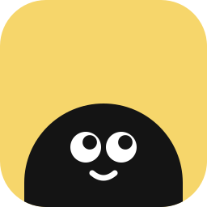
01 · GooglyWhite eyes glancing up, a small smile. Curious, not robotic.
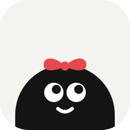
02 · Red bowTie a string to remember: Remy wears the reminder.
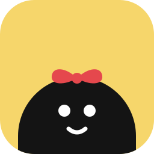
03 · Bow · dot eyesThe bow with simple dot eyes.
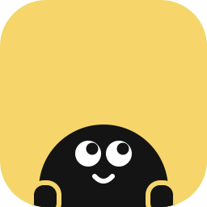
04 · HandsLittle hands grip the edge: peeking over the wall.
A light body on a dark tile, dot eyes, rosy cheeks.
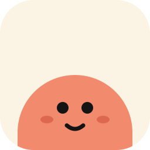
06 · Coral bodyA warm coral Remy on cream.
A dark body with a light face: a little critter.
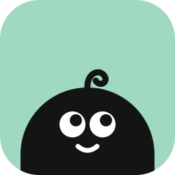
08 · CurlOne curl of hair: instant personality.
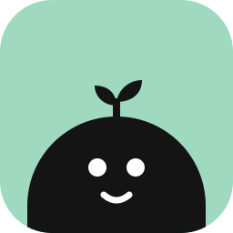
09 · SproutA sprout on its head: it grows on its day.
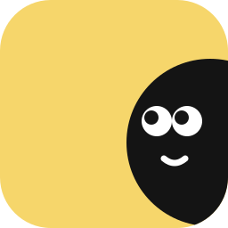
10 · Side peekRemy leans in from the side to check on you.
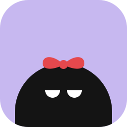
11 · SleepyHalf-closed eyes: resting until the day comes.
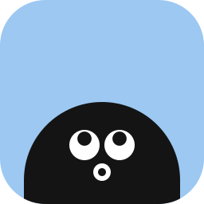
12 · Oh!A little “oh!”: it’s due today.
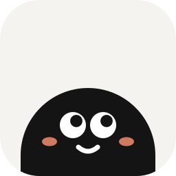
13 · Googly · blushPaper tile, googly eyes, rosy cheeks.
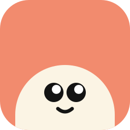
14 · Cream on coralLight body, dark eyes with a sparkle.
Light Remy with the red bow on a dark tile.
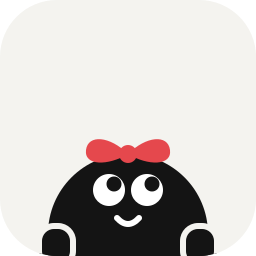
16 · Bow + handsEverything: the bow, the hands, the glance.